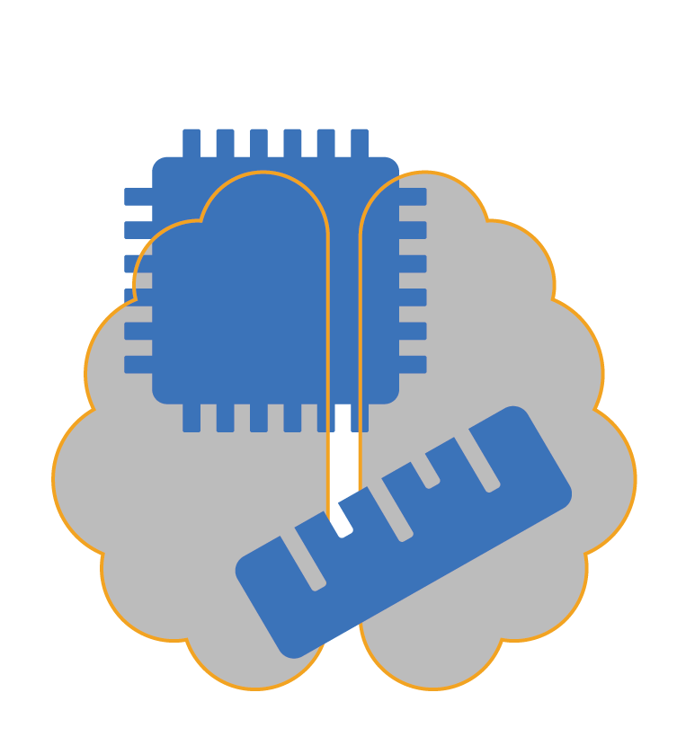

<nav class="navbar navbar-expand-md navbar-light bg-light text-align-end">
  <!--<a class="navbar-brand" href="index.html">
    
  </a>-->
  <button
    class="navbar-toggler"
    type="button"
    data-toggle="collapse"
    data-target="#navbarNavDropdown"
    aria-controls="navbarNavDropdown"
    aria-expanded="false"
    aria-label="Toggle navigation"
  >
    <span class="navbar-toggler-icon"></span>
  </button>
  <div class="collapse navbar-collapse justify-content-end" id="navbarNavDropdown">
    <!-- LIST FOR NAVBAR -->
    <ul class="navbar-nav ml-auto">
      <!-- HOME -->
      <li class="nav-item">
        <a class="nav-link" href="/">Home</a>
      </li>

      <!-- ABOUT -->
      <li class="nav-item dropdown">
        <a
          class="nav-link dropdown-toggle"
          id="navbarDropdownMenuLink"
          data-toggle="dropdown"
          aria-haspopup="true"
          aria-expanded="false"
        >
          About
        </a>
        <div class="dropdown-menu" aria-labelledby="navbarDropdownMenuLink">
          <a class="dropdown-item" href="about.html">About SCALE-Sim</a>
          <a class="dropdown-item" href="contact.html">The Team</a>
          <a class="dropdown-item" href="publication.html">Publications</a>
        </div>
      </li>

      <!-- DOCUMENTATION -->
      <li class="nav-item dropdown">
        <a
          class="nav-link dropdown-toggle"
          id="navbarDropdownMenuLink"
          data-toggle="dropdown"
          aria-haspopup="true"
          aria-expanded="false"
        >
          Documentation
        </a>
        <div class="dropdown-menu" aria-labelledby="navbarDropdownMenuLink">
          <!-- Pull navigation from _data/documentation.yml -->

          <a class="dropdown-item" href="gettingstarted.html">Learning SCALE-Sim</a>

          <a class="dropdown-item" href="https://github.com/scalesim-project/scale-sim-v2/tree/main/documentation">SCALE-Sim documentation</a>

          <a class="dropdown-item" href="https://github.com/scalesim-project/scale-sim-v2/issues">Reporting problems</a>
        </div>
      </li>

      <!-- Tutorials -->
      <li class="nav-item dropdown">
        <a
        class="nav-link dropdown-toggle"
        id="navbarDropdownMenuLink"
        data-toggle="dropdown"
        aria-haspopup="true"
        aria-expanded="false"
      >
        Tutorials
      </a>
      <div class="dropdown-menu" aria-labelledby="navbarDropdownMenuLink">
        <!-- Pull navigation from _data/documentation.yml -->

        <a class="dropdown-item" href="gettingstarted.html">Getting Started</a>
        <a class="dropdown-item" href="tutorials.html">Tutorials</a>
        <a class="dropdown-item" href="talks.html">Scientific Talks</a>
      </div>

      </li>

      <!-- CONTRIBUTING -->
      <li class="nav-item">
        <a class="nav-link" href="">Contributing</a>
      </li>
    </ul>
  </div>
</nav>
